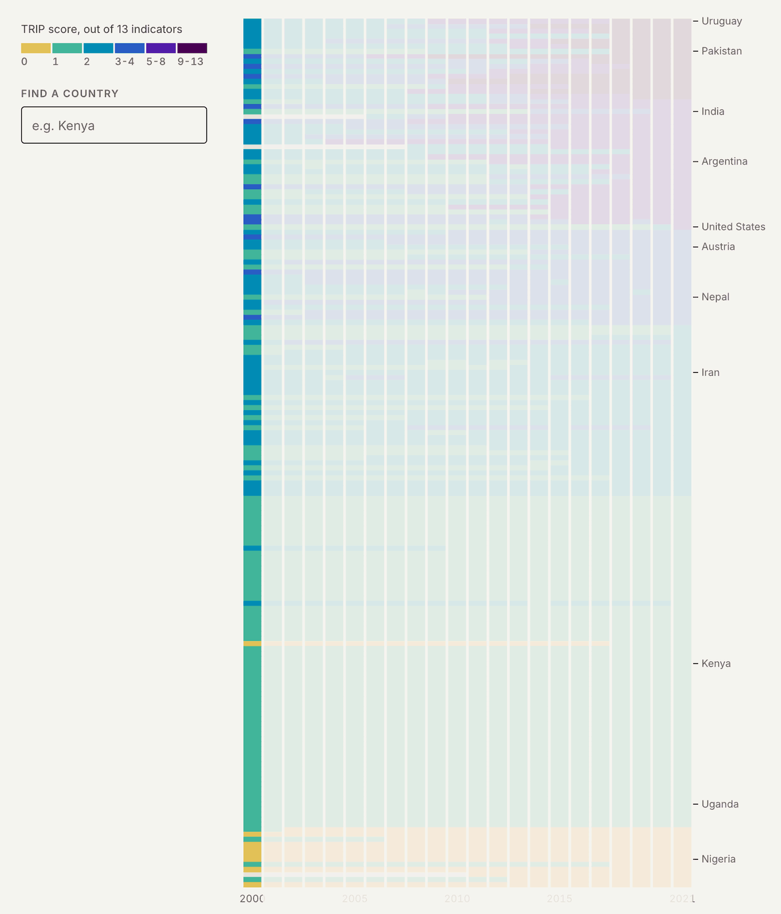
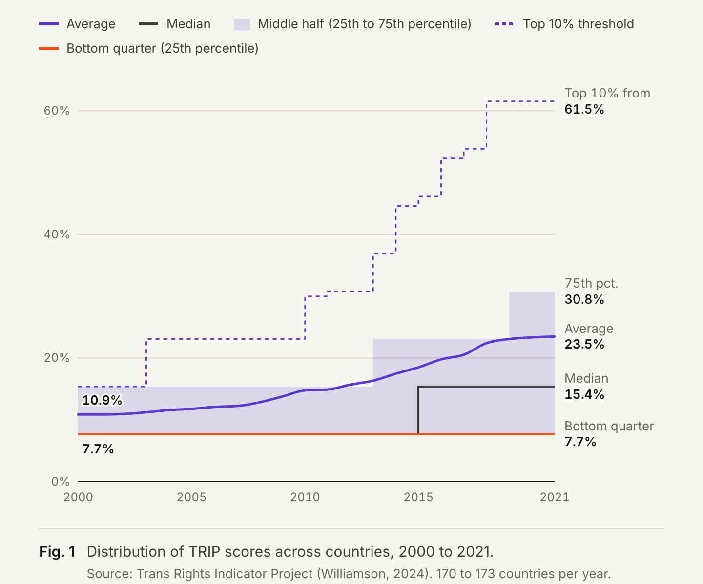
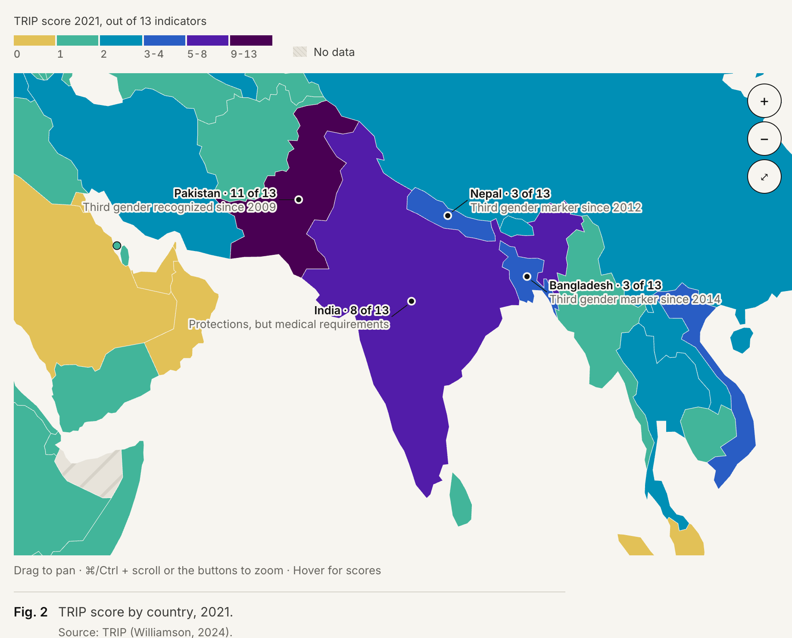
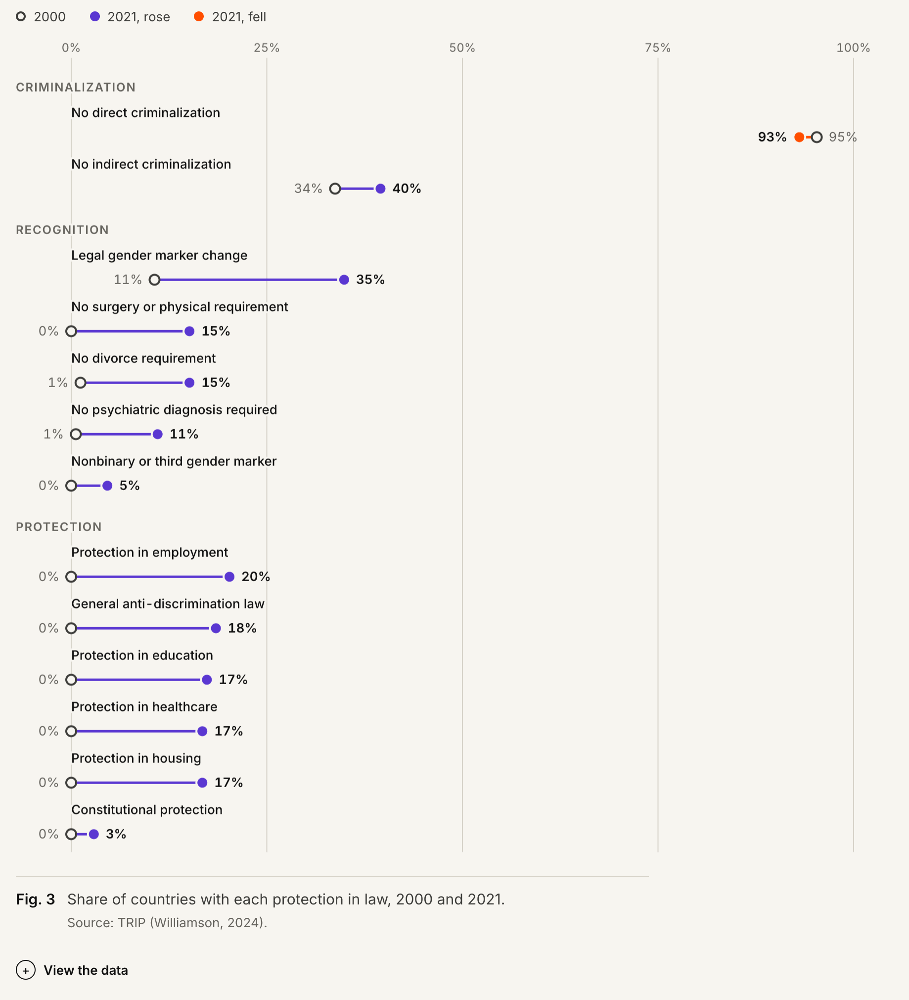
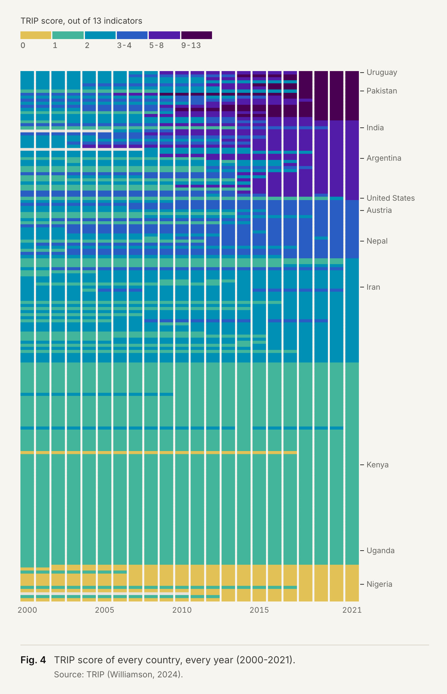

- Type
- Personal Project
- Category
- Data Story
- Timeframe
- 2026
- Tools
- Python, Observable Framework, D3.js
The Dataset
13 indicators in 173 countries from 2000 to 2021
Uneven Ground is an article about what the world’s laws say about trans people. It is built on the Trans Rights Indicator Project ↗︎ (TRIP), which political scientist Myles Williamson created for his doctoral research at the University of Alabama and published in Perspectives on Politics in 2024.
Williamson coded the laws of 173 countries by hand, for every year from 2000 to 2021, using 13 yes-or-no indicators in three groups. A country’s score is the number of those 13 it meets.
Criminalization
- No direct criminalization
- No indirect criminalization
Recognition
- Legal gender marker change
- No surgery or physical requirement
- No divorce requirement
- No psychiatric diagnosis required
- Nonbinary or third gender marker
Protection
- Protection in employment
- General anti-discrimination law
- Protection in education
- Protection in healthcare
- Protection in housing
- Constitutional protection
Finding the Story
Beyond the average
When I first explored the data in Python, the headline seemed like a classic piece of good news: the average global score more than doubled, jumping from 10.9% in 2000 to 23.5% in 2021.
It’s easy to stop there and build a cheerful trend line. But when I plotted the median and percentiles right alongside that average, the picture completely fell apart.
The global average was hiding a massive divergence. A handful of countries had aggressively rewritten their laws, while 88 countries ended 2021 with the exact same score they had in 2000. In fact, the bottom 25% of countries sat stubbornly at 7.7% in both years.
That gap became the real story. Progress was happening, but it wasn’t a rising tide lifting all boats, it was concentrated at the top. Looking closer at regional and income brackets helped unearth fascinating outliers.
Design Process & Decisions
From a dashboard to one story
The project didn’t start as an article. My first version was a dark, multi-page explorer with global, regional and country views, and a chart for each: trend lines, a map, a beeswarm, country comparisons. This played too much in the ranking system and was not telling a specific story. I fell into the trap of “dashboarding” without a clear storyline.
Once the finding was clear, I cut it down to a single page driven by four central questions, anchored by one primary chart each.
Once I structured the questions and story arc, I gave it its final editorial polish:
- Shifting from a moody dark mode to a warm, paper-inspired background.
- Using clean, publication-grade typography.
- Designing charts that actively evolve as the reader scrolls that will represent each question.
Bringing the narrative to life
Here is how those four core questions shaped the final piece:
1. What the average hides
Instead of relying on a single, misleading average line, the chart opens with the average and then layers on the median, the middle half, the top 10% threshold, and the bottom quarter, step-by-step as you scroll. By the end, you see the top threshold climbing past 60% while the bottom quarter sits flat.

2. A map of exceptions
A global map keeps geography grounded. Instead of forcing users to pan and zoom, the page flies from region to region on scroll, highlighting regional patterns and calling out exceptions directly on the canvas. I also changed the continuous color scale used at the beginning; since 78% of countries score 0, 1, or 2, a gradient turned most of the world into a blur. Six fixed classes make the differences clearer.

3. Recognition before protection
Plotting the 13 indicators over time revealed a clear sequencing: legal gender marker changes climbed first, while broader anti-discrimination protections largely accelerated after 2010. A clean dumbbell plot comparing 2000 to 2021 made all 13 rows instantly readable at a glance.

4. Every country, every year
The flagship chart at the end packs every country and every year into a single heatmap sorted by 2021 scores. The finding turns into a specific visual shape: a dark, dense corner at the top right, and a bottom half that barely flickers over two decades. A search box lets you find any country.

Retrospective
What I learned
- Let the question drive the charts, not the other way around. Building a sprawling dashboard before I had a clear thesis taught me the hard way that a tool isn’t a story. Next time, notebook and narrative come first; the UI comes second.
- Lean into data limits. Being transparent about what TRIP doesn’t capture (enforcement, lived experience, and the post-2021 landscape) didn’t weaken the argument, it made the piece much more honest and grounded.